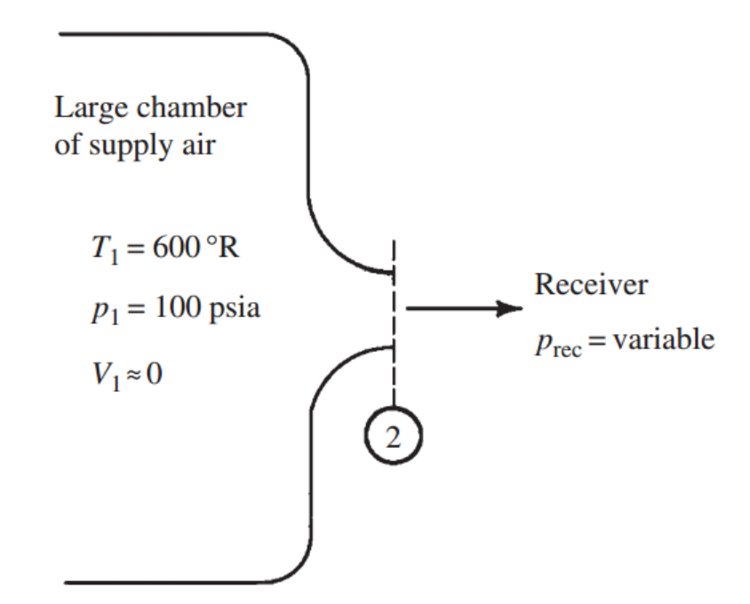
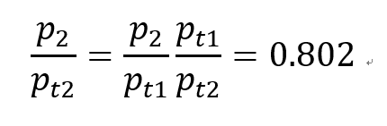

[Gas Dynamics] Ch 5 Varying - Area Adiabatic Flow - part3- Converging-only nozzle
이제 Area change가 일어나는 실제 유동을 분석해보자
가장 쉬운 예시가 바로 Nozzle
노즐은 크게 Converging, Convering & Diverging 이렇게 두가지 type으로 나누어지고
먼저 Converging only Type부터 살펴봅시다
Assumptions
-Adaibatic
-No friction
-no shaft work
-1-D
-Steady state
-Negligible potential

저렇게 Chamber 안에 초기온도, 압력, 속도를 알고 시작합니다. 핵심은 안에 속도가 0 이므로
Stagnation point 라는 점!!
따라서 T1t , P1t 를 알 수 있다.
![[Gas Dynamics] Ch 5 Varying - Area Adiabatic Flow - part3- Converging-only nozzle](./images/img-002.png)
No heat transfer, no shaft work 이므로 Stagnation 엔탈피 일정(h1t=h2t)
No friction 이므로 엔트로피 일정 -> Stagnation pressure 일정 (p1t = p2t)
만약에 Prec = 80.2psia 라고 하자.
그렇다면 우리는 State2에서 Stagnation-static pressure ratio 를 알 수있다 (Pt1=Pt2이므로)

지난 포스터에서
우리는 p/pt = f(Ma,r) 가 Isentropic Table 에 가시화 되어있음을 확인하였다!
공기이므로 r=1.4 따라서 Appendix G 를 확인하면
M2 = 0.57
만약에 Prec = 52.83psia 인 경우?
같은 방법으로
![[Gas Dynamics] Ch 5 Varying - Area Adiabatic Flow - part3- Converging-only nozzle](./images/img-004.png)
M2 = 1
마하 속도에 도달하게 된다. 우리는 그때 recevier pressure = critical pressure 이라고 부른다.
즉 receiver압력을 낮추면 속도가 증가하는 것을 확인하였다.
receiver의 압력이 nozzle 공기의 흐름을 제어 하는 역할 까지
그러면 여기서 질문이 생기게 된다,,, 만약에 여기서 압력을 더 낮추면 속도가 더 증가할까???
![[Gas Dynamics] Ch 5 Varying - Area Adiabatic Flow - part3- Converging-only nozzle](./images/img-005.jpg)
만약에 최종속도가 Supersonic 이라면 노즐안에
Ma=1인 지점
이 존재해야만한다.
why??속도가 0 에서 a보다 큰 속도로 연속적으로 증가하므로 V=a순간을 지나가야만 함. 사이값 정리.
![[Gas Dynamics] Ch 5 Varying - Area Adiabatic Flow - part3- Converging-only nozzle](./images/img-006.png)
[Ch5 part1에서 속도변화와 면적변화의 식을 유도했었다]
그림에서 Ma=1인 지점을 state x 라고 하자 그렇다면 위 식에서 M=1이므로 그때의 dA=0 이어야만 한다.
하지만 실제 converging only nozzle 안에서 dA = 0 인 부분은 출구 말고는 존재하지 않는다.
결론은 불가능
압력에 따라 흐름이 전체적으로 어떻게 되는지 그래프로 총 정리해보자
![[Gas Dynamics] Ch 5 Varying - Area Adiabatic Flow - part3- Converging-only nozzle](./images/img-007.png)
Pb = P receiver, Pe = P exit
P receiver(Pb) 가 Critical pressure(P)보다 크다면
(이전 문제에서 Prec = 80.2psia 였던 경우, 그림에서 case a and b)
-> Exit 에서 subsonic flow -> 문제없이 정상적으로 P exit = P receiver (Pb)
만약 P rec(Pb) = Critical pressure(P) 이라면
(이전 문제에서 Prec = 52.83sia 였던 경우, 그림에서 case c)
-> Exit 에서 sonic flow -> 문제없이 정상적으로 P exit = P receiver (Pb)
하지만 P rec < Critical pressure 인 경우 속도는 더 증가하여
supersnoic flow는 만들어 지지 않는다. (그림에서 case d,e)
-> Exit 에서 sonic flow -> P exit = P critical 로 나옴 case c 와 동일하게 흐름
-> P critical 로 나온 후에 주변 압력과 맞추기 위해 Expansion 으로 압력을 nozzle밖에서 낮춘다.
Mass flow rate 분석
![[Gas Dynamics] Ch 5 Varying - Area Adiabatic Flow - part3- Converging-only nozzle](./images/img-008.png)
외부압력을 계속해서 낮추면 a->b->c 과정에서 속도가 계속해서 증가하는 것을 노즐 그래프에서 확인했다.
따라서 mass flow rate 는 계속해서 증가한다.
Receiver 압력을 계속해서 낮추면 속도와 mass flow rate가 계속해서 증가하다가
어느순간 Exit 에서 Ma =1 즉 snoic flow가 형성된다.(Case c)
더 압력을 낮추어도 속도는 더이상 증가하지 않는다?? 왜?? supersnoic이 되어야 하는데
그런 경우 nozzle 안에 dA = 0 인 구간이 있어야 하지만 Converging only nozzle 에서는 구조상 불가능
Therefore, exit velocity remains as Snoic velocity with [Ma exit] = 1.
In this sense, Nozzle Mass flow rate는 압력을 더이상 낮춰도 Case c (P receiver = critical pressure) 인 경우와 동일
따라서 이때가 Maximum Mass flow rate 이고
더이상 증가하지 않는다고 해서 Case C 일때 Exit 에서 Flow 가 Chocked 되었다고 표현한다.